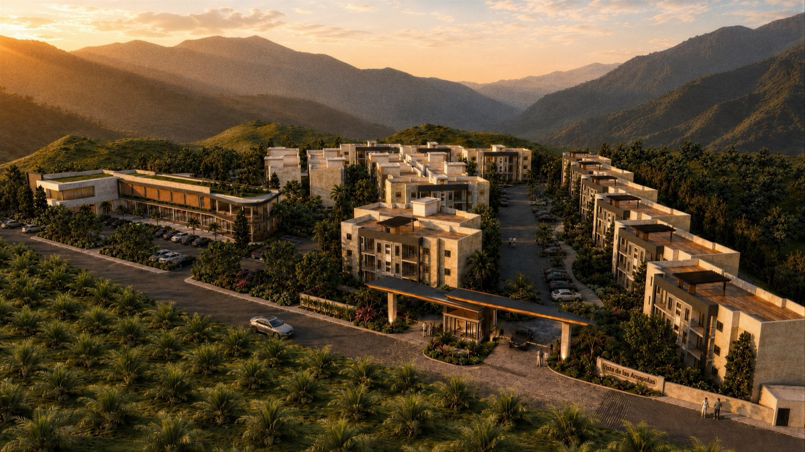
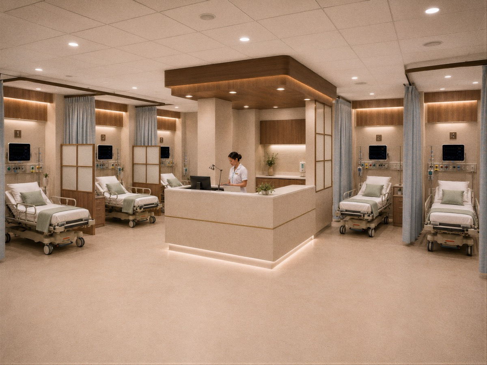
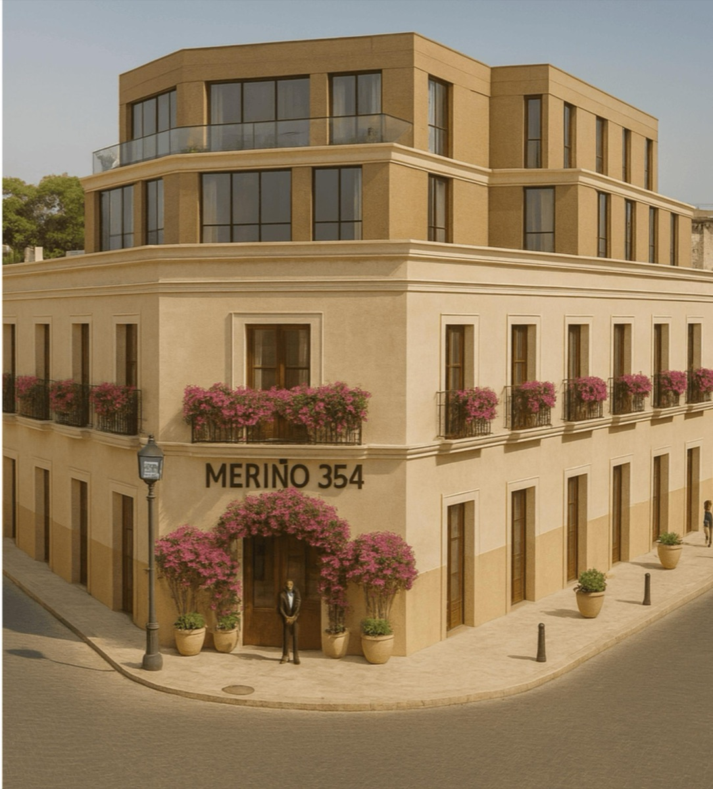
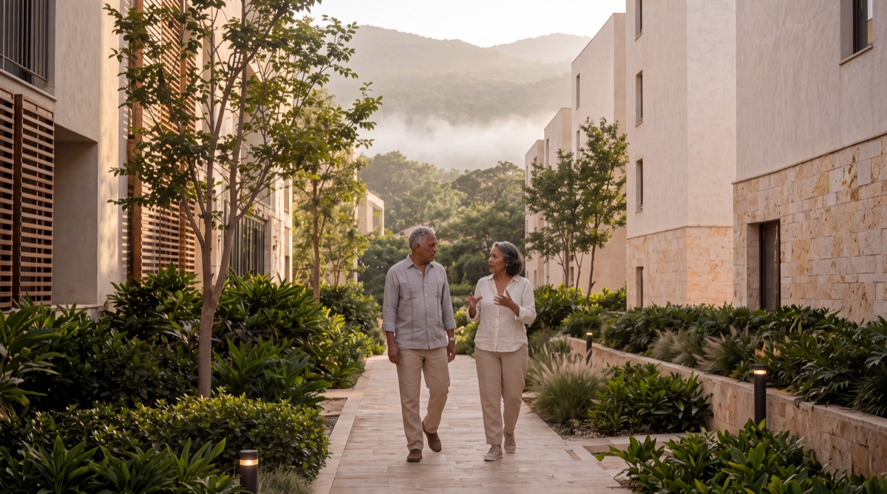
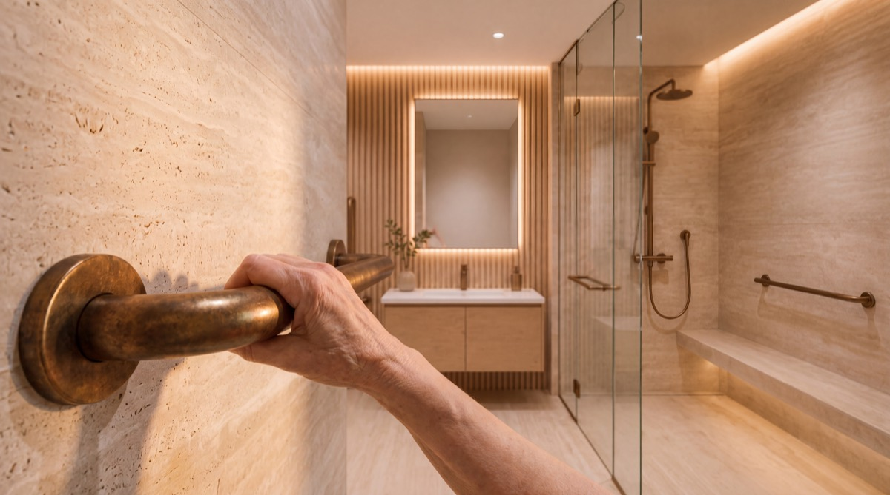
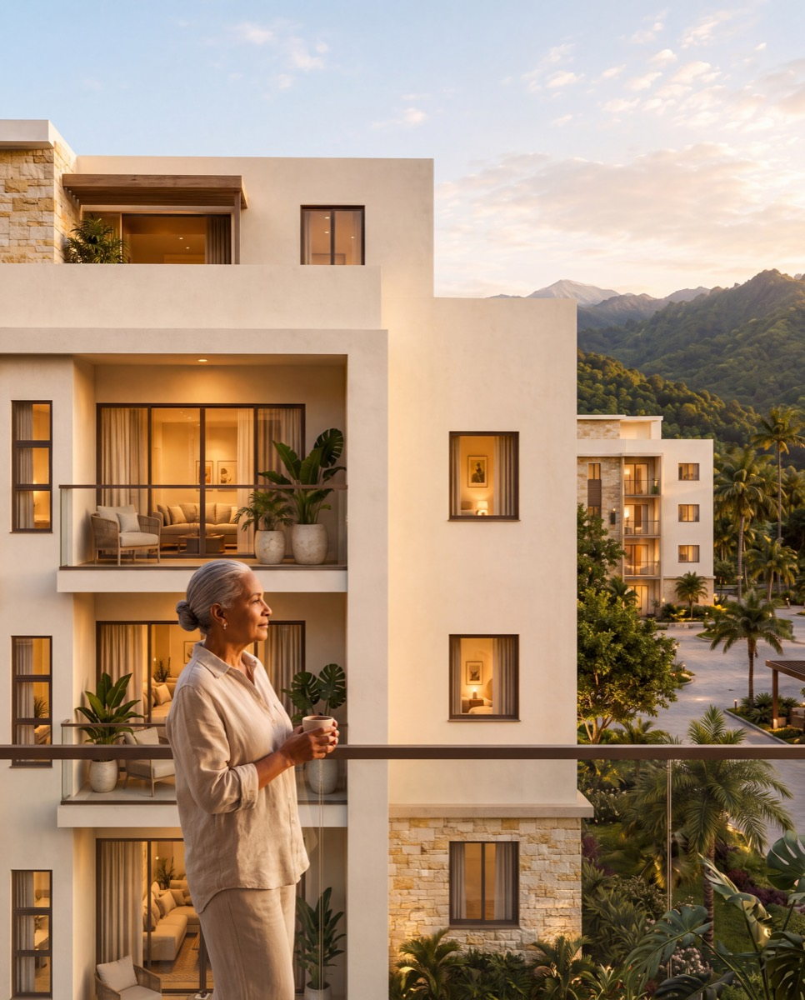

L-Node · Longevidad
Vista de las Amapolas
Residencias, centro de servicios, módulo terapéutico, restaurante y un kilómetro de senderos.
Villa Altagracia, San Cristóbal · a 40 minutos de Santo Domingo
En obra
Dónde está KONFOR
Villa Altagracia, Gazcue y la Ciudad Colonial. Siguen Santiago, Santo Domingo Este, Cap Cana y Punta Cana.

L-Node · Longevidad
Residencias, centro de servicios, módulo terapéutico, restaurante y un kilómetro de senderos.
Villa Altagracia, San Cristóbal · a 40 minutos de Santo Domingo
En obra

M-Node · Médico
Consulta, imágenes, laboratorio y procedimientos de día. Es el nodo que da soporte clínico a toda la red.
Calle Winston Arnaud No. 2, sector Quisqueya · Santo Domingo, Distrito Nacional
En estructuración

R-Node · Recuperación
Recuperación y estancia corta para posoperatorio y turismo médico, en el casco histórico.
Calle Arzobispo Meriño 354, Ciudad Colonial · Santo Domingo
En plano
Próximos destinos
En evaluación de terreno y estructuración. Se anuncian cuando haya obra, no antes.
El primer nodo
Residencias diseñadas para sostener la vida, no solo para alojarla. Y un centro de servicios que hace que vivir ahí sea distinto a vivir en cualquier otro sitio.




Laboratorio, consultorio, enfermería y farmacia en planta baja.
Restaurante, sala de lectura y salón social en el segundo nivel.
Módulo terapéutico con piscina calefactada, jacuzzis, sala de ejercicio y estimulación cognitiva.
Planta eléctrica con respaldo integral y seguridad 24/7.
Vista de las Amapolas
El primer nodo de longevidad de República Dominicana. Villa Altagracia, a cuarenta minutos de Santo Domingo.
Renders conceptuales del artista. Las imágenes son ilustrativas y no contractuales.
